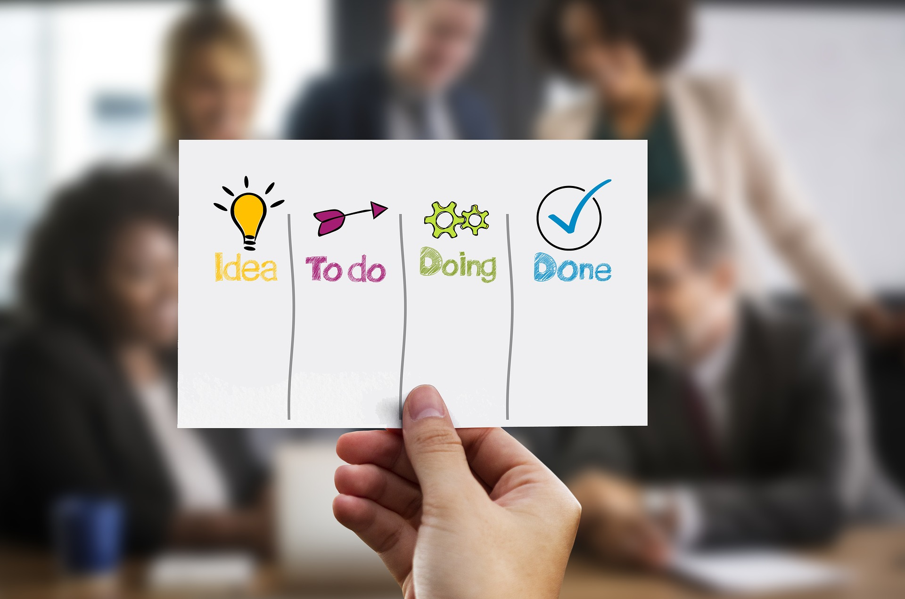
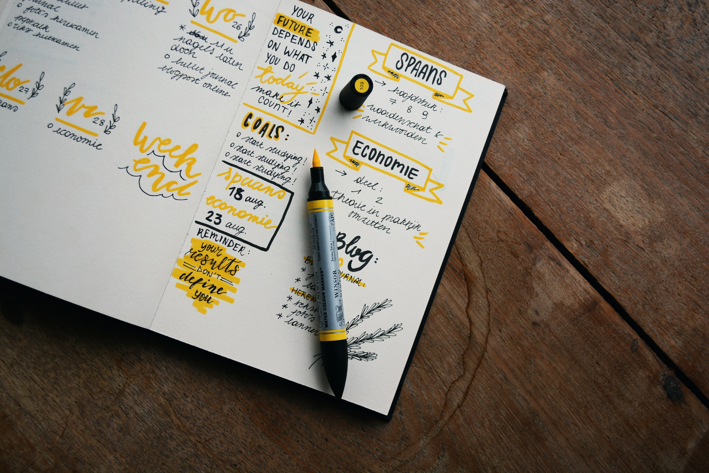

Привіт всім! Мене звати Люба, я новачок в сфері веб-розробки і це мій перший проект. До того ж, за освітою я менеджер. Тому я вирішила дещо поєднати ці дві сфери та дати декілька порад щодо планування дня і створити для вас To Do List, яким ви зможете користуватись щодня!
Планери, записники та інші інструментів для планування — марна трата часу, якщо вони не сприяють досягненню ваших цілей.
Результатами ефективного планування мають бути: чітка картинка у голові, прогрес у здійсненні мети, зниження рівня тривоги і розпорошеності, натомість — збільшення кількості енергії та відчуття гармонії. Усе це можливо, якщо ваші плани відповідають цілям, а цілі — цінностям.
Давайте визначимо, які маленькі дії дійсно сприятимуть вашому прогресу. Тільки для початку пропоную домовитись про їхню регулярність, згода?
1. Складіть список справ.
Випишіть усе, що повинні зробити за тиждень.
І нехай це розвантаження мозку стане для вас спокійним і приємним ритуалом.
2. Запишіть фокус тижня.
Те, чому хочете присвятити максимум часу і що наближає вас до головної вашої мети. У всіх є мільйон справ щотижня, але саме вміння розставляти пріоритети та фокусуватися на дійсно важливих речах робить нас свідомими людьми.

3. Виділіть 3 топові цілі тижня.
Це ваші найважливіші кроки до мети цього тижня, тому морально готуйтеся рішуче відтинати неважливе. Критерії для визначення топових цілей:
- найбільше сприяють вашій головній меті;
- знаходяться у межах вашого фокусу;
- які треба зробити будь-що.

4. Визначте головну справу кожного дня.
Проаналізуйте список справ на тиждень, визначте основну ціль на щодень та виділіть її червоним. У результаті з головних справ дня має скластися покрокова інструкція для досягнення вашої мети. Починайте кожен день із головної справи і тільки після неї беріться за інші.

5. Записуйте список справ перед сном.
Цей лайфхак допомагає морально підготуватись до роботи наступного дня, щоб зранку не сумніватися, з чого почати й на чому сфокусуватися.
Намагайтеся записувати справи у порядку виконання.
Найважче та найважливіше завдання краще робити першим (правило «з’їжте жабу»).
У деяких пунктах давайте собі вибір (наприклад, справа #124 — піти на подію або почитати книжку).
Придумайте собі винагороду за викреслення усіх справ зі списку.

6. Кресліть.
Хай ваш план на тиждень виглядає покресленим і підкресленим, адже це робочий інструмент. Викреслюйте червоним маркером кожну виконану справу, можете ще й у голові прокручувати «Юхуу, я це зробила / зробив!» або включати улюблений трек 🙂
7. Аналізуйте.
Наприкінці кожного дня подумайте, що вдалося зробити, а що ні. І не засмучуйтесь, якщо щось доведеться перенести на наступний тиждень. Наше планування має бути гнучким, адже ви не можете передбачити життя — ви можете лише спробувати його запланувати 🙂 Мені здається, що прагнення все контролювати й встигати призводить до того, що люди лише розчаровуються у плануванні.